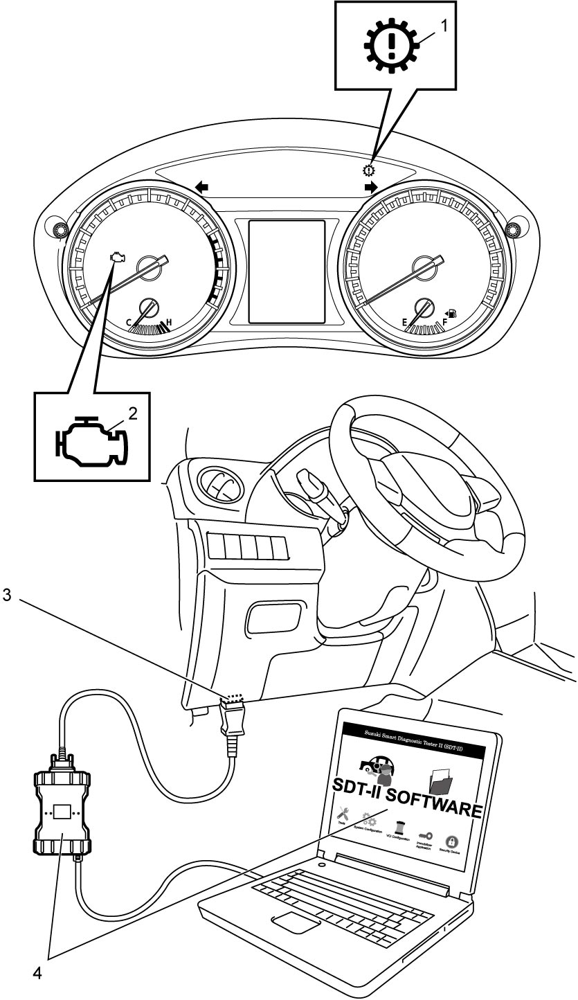

5A
| OBD System Description |
Discrimination for OBD System
There are two types of OBD system, type A and B, in accordance with regulations in each country.
Vehicle equipped with the OBD system of Type A
Euro OBD model
Vehicle equipped with the OBD system of Type B
Non-Euro OBD model
Difference in OBD system type
| Type A | Type B | |
|---|---|---|
| Freeze frame data | Available | Available |
| SUZUKI scan tool (Suzuki SDT-II) | Available | Available |
| CAN communication OBD-II generic scan tool | Available | Not available |
General Description (Type A)
For A/T control system, TCM has the following functions.
•When ignition is “ON” with no malfunction in A/T control system detected, transmission warning light (1) lights for about 2 seconds and then goes OFF for the circuit check.
•When TCM detects a malfunction in A/T control system, it indicates transmission warning light and stores DTC in its memory.
TCM detects a malfunction which gives an adverse effect to vehicle emission in A/T control system while the engine is running, TCM requires ECM to make the MIL (2) turn ON.
•TCM stores the malfunction area (DTC according to SAE J2012) in TCM memory. (If it judges that the system is normal for 3 driving cycles continuously after detecting a malfunction, it makes transmission warning light turn OFF although DTC stored in its memory will remain.)
•It is possible to communicate with vehicle through DLC (3) using not only SUZUKI scan tool (4) but also CAN communication OBD-II generic scan tool which are in compliance with SAE J1978. (Diagnostic information can be accessed using a scan tool.)
 •For information about the following items, refer to “OBD System Description”.
•For information about the following items, refer to “OBD System Description”.
M16A model:
K14C model:
•When TCM detects a malfunction in A/T control system, it indicates transmission warning light and stores DTC in its memory.
TCM detects a malfunction which gives an adverse effect to vehicle emission in A/T control system while the engine is running, TCM requires ECM to make the MIL (2) turn ON.
•TCM stores the malfunction area (DTC according to SAE J2012) in TCM memory. (If it judges that the system is normal for 3 driving cycles continuously after detecting a malfunction, it makes transmission warning light turn OFF although DTC stored in its memory will remain.)
•It is possible to communicate with vehicle through DLC (3) using not only SUZUKI scan tool (4) but also CAN communication OBD-II generic scan tool which are in compliance with SAE J1978. (Diagnostic information can be accessed using a scan tool.)

 "Expand image")
M16A model:
K14C model:
—Warm-up cycle
—Driving cycle
—2 driving cycle detection logic
—Pending DTC
—Freeze frame data
—Driving cycle
—2 driving cycle detection logic
—Pending DTC
—Freeze frame data
General Description (Type B)
•When ignition is “ON” with no malfunction in A/T control system detected, transmission warning light (1) lights for about 2 seconds and then goes OFF for the circuit check.
•When TCM detects a malfunction in A/T control system, it indicates transmission warning light and stores DTC in its memory.
•It is possible to communicate with vehicle through DLC (2) using SUZUKI scan tool (3). Diagnostic information can be checked and cleared using SUZUKI scan tool.
 •For information about the following items, refer to OBD System Description:M16A.
•For information about the following items, refer to OBD System Description:M16A.
•When TCM detects a malfunction in A/T control system, it indicates transmission warning light and stores DTC in its memory.
•It is possible to communicate with vehicle through DLC (2) using SUZUKI scan tool (3). Diagnostic information can be checked and cleared using SUZUKI scan tool.
 "Expand image")
—Warm-up cycle
—Driving cycle
—2 driving cycle detection logic
—Pending DTC
—Freeze frame data
—Driving cycle
—2 driving cycle detection logic
—Pending DTC
—Freeze frame data